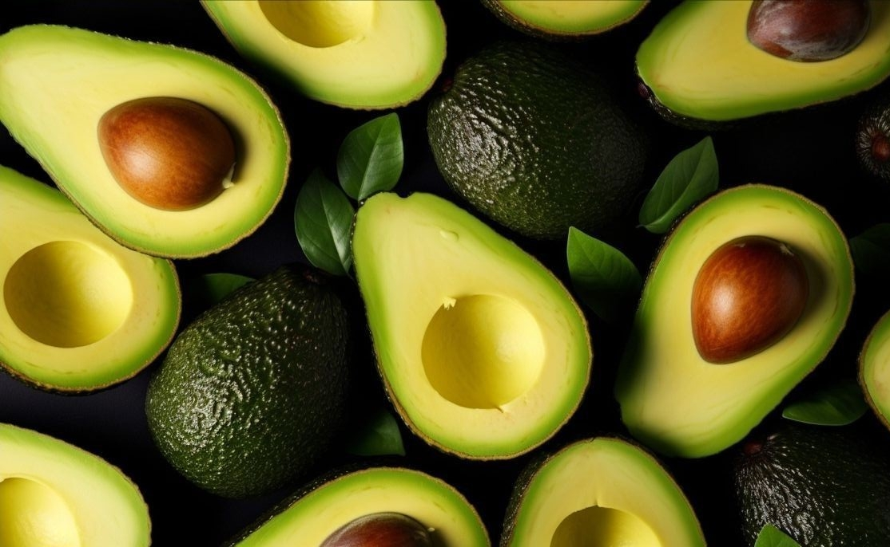

Written by kalkol
Manfaat Alpukat Untuk Tubuh
Apa Itu Alpukat?
Buah alpukat adalah buah tropis yang kaya akan lemak sehat terutama lemak jenuh tunggal. Teksturnya lembut dan creamy, dengan rasa yang sedikit nutty. Selain lezat, alpukat juga merupakan sumber vitamin K, vitamin C, kalium, dan serat yang baik.
Kandungan Nutrisi Alpukat
Alpukat merupakan salah satu jenis buah sehat dengan tekstur lembut dan rasa lezat, serta diperkaya dengan barbagai kandungan nutrisi yang dibutuhkan oleh tubuh. Adapun komposisi gizi yang terkandung di dalam 100 gram alpukat adalah:
- Energi : 85Kal
- Air : 84,3g
- Karbohidrat : 7,7g
- Lemak : 6,5g
- Protein : 0,9g
- Abu : 0,6g
- Kalium (K): 278,0 mg
- Fosfor (P): 20 mg
- Vitamin C : 13 mg
- Kalsium (Ca) : 10 mg
- Vitamin E : 2,07 mg
- Natrium (Na) : 2 mg
- Niasin (Niacin): 1,0 mg
- Tembaga (Cu): 0,20 mg